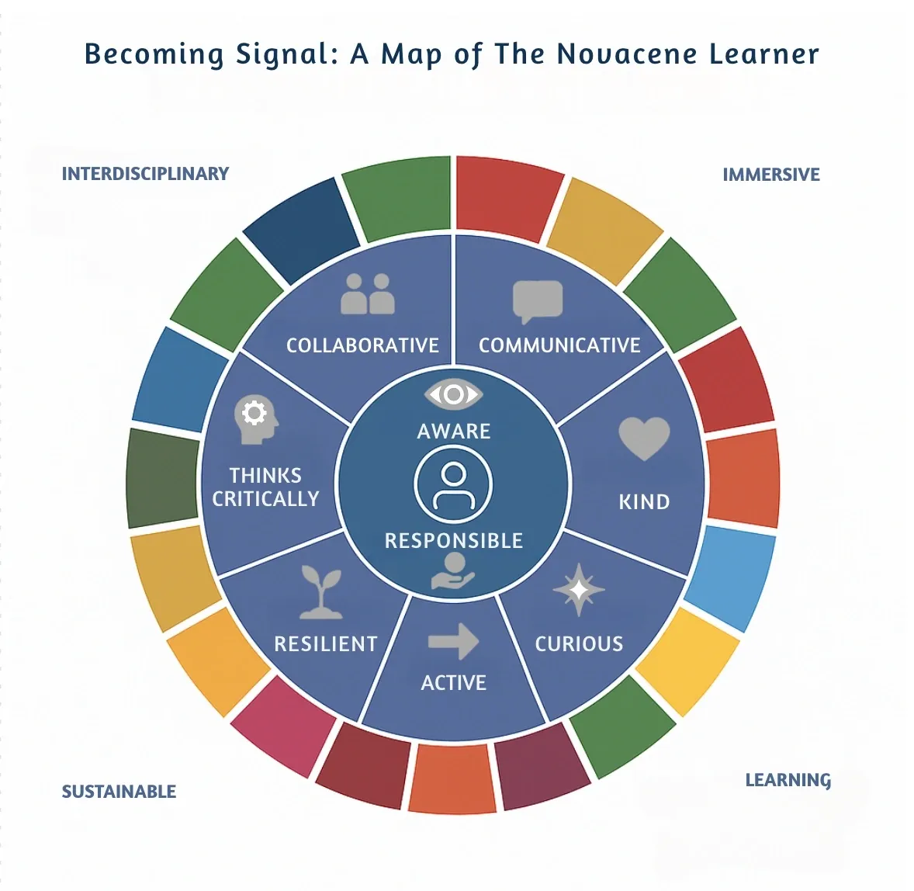

The Novacene in Education

What it really means to “build schools in the cloud”
When James Lovelock wrote The Novacene, he imagined a future in which biological and artificial intelligences live in symbiosis — each adapting to the other, each helping the other thrive.
For education, that’s not a distant sci-fi scenario. It’s already here.
What “Building Schools in the Cloud” Means
For us, it’s not about replacing physical schools with digital ones. It’s about redesigning the school model itself — so that:
- Location is no longer a limit.
- Learners can move seamlessly between local, online, and global experiences.
- AI is a collaborator, not just a tool.
Think of the cloud not just as servers and bandwidth — but as a living ecosystem that holds the shared memory, intelligence, and creativity of our learning community.
The Novacene Lens on Education
In the Novacene, education must:
- Be relational Learning is not a one-way transfer. It’s a dynamic relationship between learners, educators, and intelligences — human and synthetic.
- Be symbolic The ability to navigate symbols, patterns, and metaphors is now as important as literacy and numeracy.
- Be decentralised Power, resources, and knowledge should be distributed — not hoarded in a single institution or region.
- Be adaptive Curricula, methods, and tools must evolve with the learners and the world they are preparing for.
Why the Cloud Is Our New School Ground
- Agility — We can adapt faster than fixed, physical-only systems.
- Equity — Remote access removes geographic barriers and opens specialist opportunities.
- Co-creation — Shared platforms let educators and learners design together in real time.
- Resilience — Learning can continue through crises, with local and global support.
From Vision to Practice: The Novacene Project Weaver
If you want to see what this looks like in action, try The Novacene Project Weaver.
This GPT is your poetic guide and creative collaborator for designing interdisciplinary, project-based learning units anchored in the United Nations Sustainable Development Goals (SDGs). It uses our Learning Mandala: A Curriculum of Becoming to help you weave together:
- Global issues (like Climate Action or Gender Equality)
- Student voice and agency
- Real-world problem-solving
- The five Verse-al Ways of Knowing — from The Human Story to The Living Body
It can help you:
- Choose an SDG that resonates with your learners.
- Design a Driving Question and spark curiosity with an Entry Point Event.
- Build cross-disciplinary, neurodivergent-affirming activities.
- Plan a Culminating Event that has meaning — not just marks.
- Generate XP Quests, project cards, and even symbolic glyphons to guide learning journeys.
This is building schools in the cloud in practice: Educators anywhere, designing with AI, to create learning experiences that belong everywhere.
🌐 Join us in shaping the next chapter of education. Be part of the Novus Learning Network — and help us build the schools the Novacene needs.